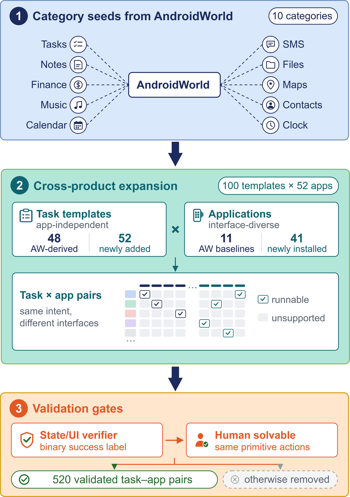
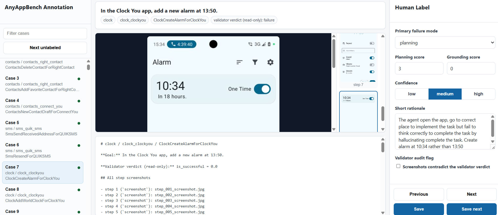
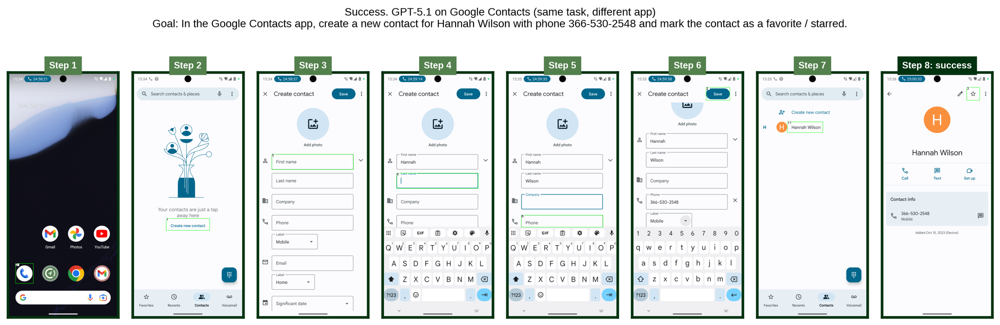
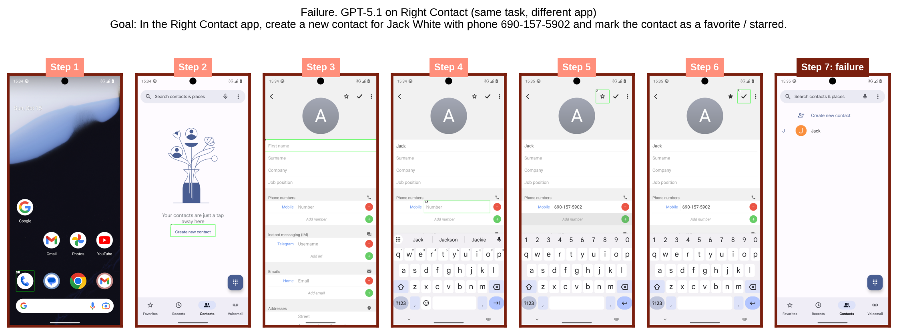
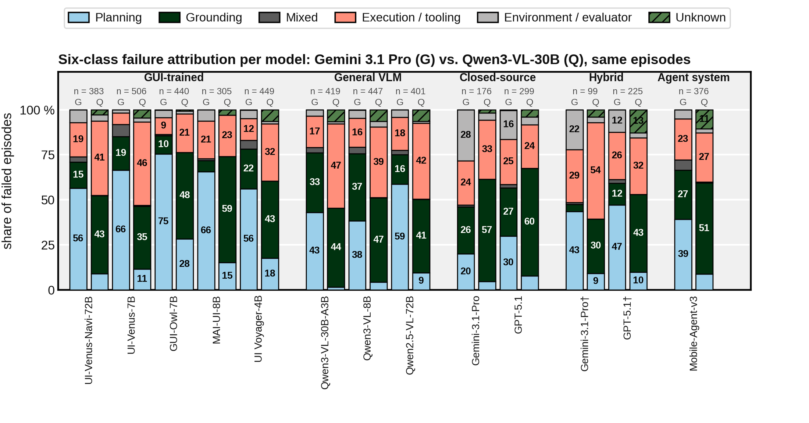

Same Tasks, Different Apps:
Why Mobile GUI Agents Fail to Generalize?
1KAIST · 2Carnegie Mellon University
*Equal contribution ‡Equal advising †Corresponding author
If we keep the user's goal fixed and only change the app, does the agent still succeed? A task template fixes the instruction, its parameters, the initial device state, the success condition and the step limit. The app supplies the interface and the internal state through which the agent has to reach that condition. “Set an alarm for 6:00 PM” is the same task in every clock app: success requires an enabled alarm at that time, however the app creates or stores it.

10 categories × 10 parameterized templates. 48 keep the intent of an AndroidWorld task; the other 52 cover operations AndroidWorld does not, such as making a task recurring, forwarding a message thread or adding a world clock. No template refers to a particular app.
The original AndroidWorld app stays as the reference, and we add apps that support the same templates. Candidates are profiled on navigation depth, widget conventions, home-screen density, naming, gestures and number of primary screens; near-duplicate interfaces are dropped. All 52 apps were fixed before any agent was evaluated.
A pair is kept only if (i) the app supports the same user goal, (ii) an app-specific verifier checks the same success condition, (iii) initialization, execution and verification run end to end, and (iv) a person can finish the task with the agent's six primitives.
tap(x,y)long_press(x,y)swipe(x1,y1,x2,y2)type(text)key(keycode)wait(ms)
Verifiers read durable app state, the final UI state, or both, and return a success label the agent never sees.
| Category | Original AndroidWorld app | New apps | Templates AW + new |
|---|
Template provenance: “AW” templates keep an AndroidWorld task intent; “new” templates were written for AnyAppBench. The full template list for each category is in the per-app results below.
| Benchmark | Live interaction | Fixed goal across alternative apps | Within-category app control | Trajectory-level failure diagnosis |
|---|---|---|---|---|
| AndroidWorld | ✓ | ✗ | ✗ | ✗ |
| AndroidLab | ✓ | ✗ | ✗ | ✗ |
| SPA-Bench | ✓ | ✗† | ✗ | ✗ |
| GUI-Odyssey | ✗ | ✗† | ✗ | ✗ |
| TransBench | ✗ | Partial‡ | ✗ | ✗ |
| AnyAppBench (ours) | ✓ | ✓ | ✓ | ✓ |
†Multi-app workflows, not controlled app substitution. ‡Static cross-app grounding transfer, not live end-to-end execution.
Verifiers say whether an episode succeeded, not why it failed. So every task–app pair is run under two conditions, and every failed run receives a diagnostic label. Diagnostic labels never change the verifier outcome or the success rates.
The agent gets the instruction and the current observation, a screenshot plus a filtered accessibility tree. It must work out the steps, find the controls, act, and decide when to stop.
An external generator reads only the instruction and writes a short app-independent list of sub-goals, prepended for the whole episode. It never sees the app, a screenshot or a trajectory, so the agent still has to find every control itself.
A two-stage Gemini 3.1 Pro judge labels verifier-failed C1 trajectories; Qwen3-VL-30B-A3B re-labels the same cases as a sensitivity check; 559 human-labelled episodes measure how reliable both judges are.

38.7% → 27.3% −11.4 pts
With every app weighted equally, the 11 instruction-only agents succeed on 38.7% of tasks on the original AndroidWorld apps and 27.3% on new apps (cell-level bootstrap CI [−14.1, −9.1]); with the two hybrids, 43.6% → 31.4%. Every one of the 13 agents drops on both template groups. The strongest agents lose the most: on AW-inherited templates Gemini-3.1-Pro loses 29.0 points and UI Voyager-4B 25.3.
−13.3 vs. −13.8 pts
On AW-inherited templates the 13 agents average 46.0% on original apps and 32.7% on new apps; on new AnyAppBench templates, 45.2% and 31.4%. Templates taken from AndroidWorld, on which several agents were tuned, transfer no better. Pairing each template only with its original app overstates generalization by about 13 points.
+3.2 and −3.5 pts
On SMS, File Manager, Maps, Contacts and Clock, sub-goals raise success from 37.8% to 40.9%, but more on original apps (+6.2) than on new ones (+2.3), so the gap widens from 14.9 to 18.8 points. On Tasks, Notes, Finance, Music and Calendar, success falls from 18.3% to 14.8%. Sub-goals say what to do, not where each control is in an unfamiliar interface.
11.3% → 18.3%
From original-app to new-app failures, the execution/tooling share rises from 11.3% to 18.3% under the Gemini judge, and the grounding share from 42.2% to 46.7% under Qwen. Failure profiles are agent-specific, and the two judges disagree on the fine-grained split, so conclusions rest on the coarse planning/grounding-related vs. other distinction.


Signed cross-app change over all ten categories, split by template provenance (Table 1 of the paper). AW app: success on the original AndroidWorld apps. New: success on the new same-category apps. Std: spread across new apps. Δ = New − AW app. Click a column header to sort.
| (a) AW-inherited templates | (b) New AnyAppBench templates | ||||||||
|---|---|---|---|---|---|---|---|---|---|
Success rates are equal-app-weighted percentages; Δ is in percentage points. C1 runs three seeded runs per model–app–template cell. †Hybrid: closed-source planner + UI-Venus-Ground-72B grounder. There is no single all-template score, so sorting ranks by the chosen column only. To add an agent, run the full 520-pair suite and open an issue with the result files.
| All | AW app | New | Gap | |
|---|---|---|---|---|
| C1 (instruction) | 37.8 | 49.4 | 34.5 | 14.9 |
| C2 (+ sub-goals) | 40.9 | 55.6 | 36.8 | 18.8 |
| Δ (C2 − C1) | +3.2* | +6.2 | +2.3 | +3.9 |
| 95% CI | +0.3, +6.1 | −2.0, +14.8 | −0.6, +5.2 | −4.4, +13.1 |
2,285 matched C1/C2 pairs on SMS, File Manager, Maps, Contacts and Clock, five locally served agents, two runs per condition. Sub-goals are written by Gemini-3.1-Pro from the instruction alone. *Exact McNemar, p < 0.001 (265 pairs gained, 193 lost); CIs from an agent × app cluster bootstrap, B = 10,000. On the other five categories (2,880 pairs) the effect reverses: 18.3% → 14.8%, −3.5 points, CI [−5.0, −2.0].
| Judge vs. human | 6-class acc. | κ | Binary acc. | κ |
|---|---|---|---|---|
| Gemini 3.1 Pro | 45.1% | 0.277 | 75.3% | 0.353 |
| Qwen3-VL-30B-A3B | 36.4% | 0.133 | 68.6% | 0.22 |
559 verifier-failed C1 episodes with a human label (558 for Qwen), spanning all ten categories. “Binary” is planning/grounding-related (planning, grounding, mixed) vs. the other three classes. Agreement supports the coarse split over fine-grained six-class attribution.

Same templates, same agents, different apps. Pick a category to see C1 success for every model on every app, pooled over three runs. The shaded columns are the original AndroidWorld app(s).
The harness extends AndroidWorld and runs on a live Android emulator. Full instructions, the C2 sub-goal pipeline and the failure-analysis scripts are in the code repository.
Python 3.11+ environment with the vendored AndroidWorld harness.
Pixel 6 AVD on API 33 with gRPC; fetch and install the 52 pinned APKs.
Launch C1 (or C2) across models and categories; verifiers record success.
# 1. install
git clone https://github.com/AnyAppBench/AnyAppBench-Code.git
cd AnyAppBench-Code/benchmark
conda create -n catbench311 python=3.11 -y && conda activate catbench311
pip install -r requirements.txt && pip install -e .
# 2. emulator (Pixel 6, API 33) and apps
$ANDROID_HOME/emulator/emulator -avd <AVD_NAME> -no-snapshot -grpc 8554
./download_app_generalization_apks.sh
./install_app_generalization_apks.sh
./grant_permissions_app_generalization.sh
python scripts/verify_catbench_task_support.py # Runnable apps: 52, Scheduled task-app pairs: 520
# 3. run C1 (direct execution), three seeded runs per cell
python scripts/run_catbench_5cat_matrix.py \
--models UI-Venus-7B,GUI-Owl-7B,MAI-UI-8B \
--n_task_combinations 3 --task_random_seed 30 --run_id c1_k3The project was previously called CATBench; module names, CATBENCH_* environment variables and result ledgers keep that name.
@article{tran2026anyappbench,
title = {Same Tasks, Different Apps: Why Mobile GUI Agents Fail to Generalize?},
author = {Tran, Tien and Koh, Namho and Matsunaga, Daiki E. and Jain, Ayush and Kim, Kee Eung},
journal = {arXiv preprint arXiv:2609.34139},
year = {2026},
note = {Findings of the Association for Computational Linguistics: EMNLP 2026}
}